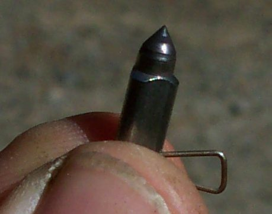
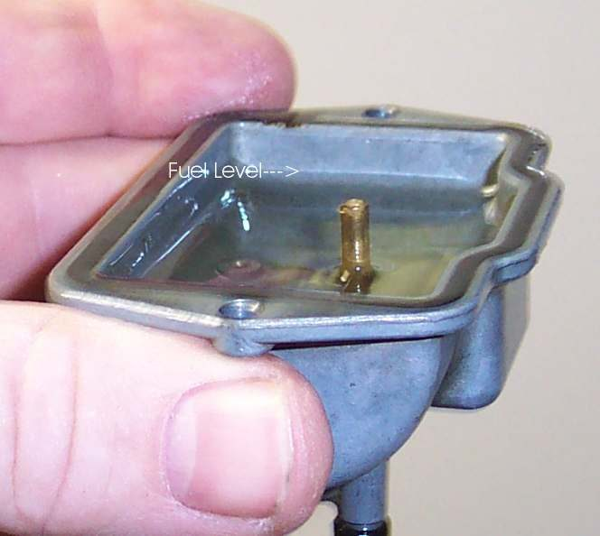
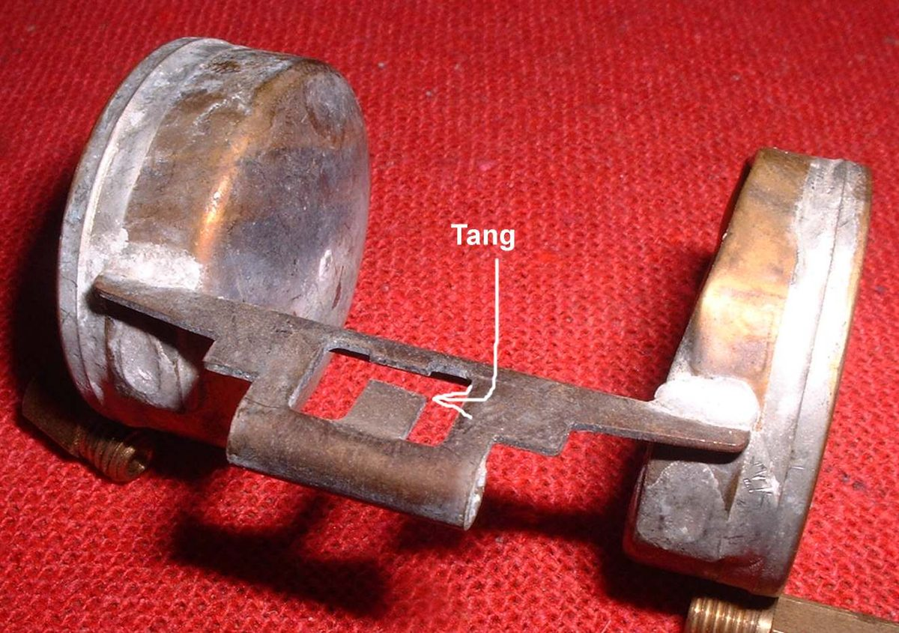

A thin pipe hangs below the carburettor. Fuel runs out of it when the float bowl overfills: the float needle is not closing, the float has sunk, or the float height is wrong. Fuel can also run the other way, into the engine, where it floods the cylinder and can drain past the piston into the oil. A dripping overflow is a fire risk on a hot engine and wastes fuel.
Is it safe to ride?
No. Turn the fuel tap OFF now. Wipe up the fuel and let the engine cool. Do not ride until the overflow is fixed, and check the engine oil for fuel before you start the engine.
Quick checks first
- Turn the tap OFF. Does the flow stop within a minute or two?
- Is the bike parked on a steep slope or heavily leaned on its side stand? A few drops can come out when tilted.
- Does the oil smell of petrol, or is the oil level higher than normal?
- Is the engine hard to turn over (fuel in the cylinder)?
- Vacuum tap: does fuel keep flowing with the engine stopped?
- If fuel pours from the overflow with the tap on, tap the carburettor body lightly with a plastic hammer. This may free a needle held by dirt. If it does not, replace needle and seat.
- A needle tip with a groove worn in it should be replaced.
- Plastic floats usually cannot be adjusted. Metal floats can be bent at the tang. See Measure and set the carburettor float height.
- A metal float crushed by frozen water makes the carburettor overflow.
- If a full tank turns into half a tank overnight, check the oil. If it is thin and smells of fuel, change it and replace the needle valve.
Diagnose it step by step
1With the tap OFF, does the overflow stop?
- Yes: go to step 2.
- No: fuel is coming from the bowl that is already full; let it drain into a container, then go to step 2.
2Ignition OFF. Push the kickstart down slowly by hand, or turn the rear wheel in top gear. Does the engine turn freely?
- Hard to turn or locks: fuel may be in the cylinder. Do not force it or use the starter. Remove the spark plug and turn the engine slowly to push the fuel out of the plug hole, with the ignition disabled so there is no spark near the fuel: Clear a flooded engine.
- Turns freely: go to step 3.
3Check the oil. Does it smell of petrol, or is the level above the upper mark?
- Yes: change the oil before running: Change the engine oil. See Oil smells of petrol.
- No: go to step 4.
4Tap ON, engine off. Tap the float bowl lightly with a screwdriver handle. Does the overflow stop?
- Yes: dirt was holding the needle open. It will return. Check the float and needle valve and fit a new fuel filter.
- No: go to step 5.
5Remove the float bowl. Is the needle tip worn, the float holding fuel, or the float height wrong?
- Worn needle: replace needle and seat.
- Fuel inside the float: replace the float.
- Height wrong: set it to your manual's figure.
- See Check the carburettor float and needle valve. If the bowl is full of dirt, clean the carburettor.
6. Vacuum tap: after the fix, does the bowl still overfill when parked? A failed tap diaphragm lets fuel flow with the engine off, and a weak needle cannot hold back the head of fuel. Replace the tap. Get in the habit of turning manual taps OFF when parking.
Causes, most likely first
| Cause | How to confirm | Fix |
|---|---|---|
| Dirt on the float needle seat | Tapping the bowl stops it | Float check |
| Worn float needle or seat | Ring worn on the needle tip | Float check |
| Leaking (sinking) float | Fuel inside when shaken | Replace float |
| Float height wrong | Measure with gauge | Float check |
| Vacuum tap passing fuel when stopped | Flow with engine off | Replace tap |